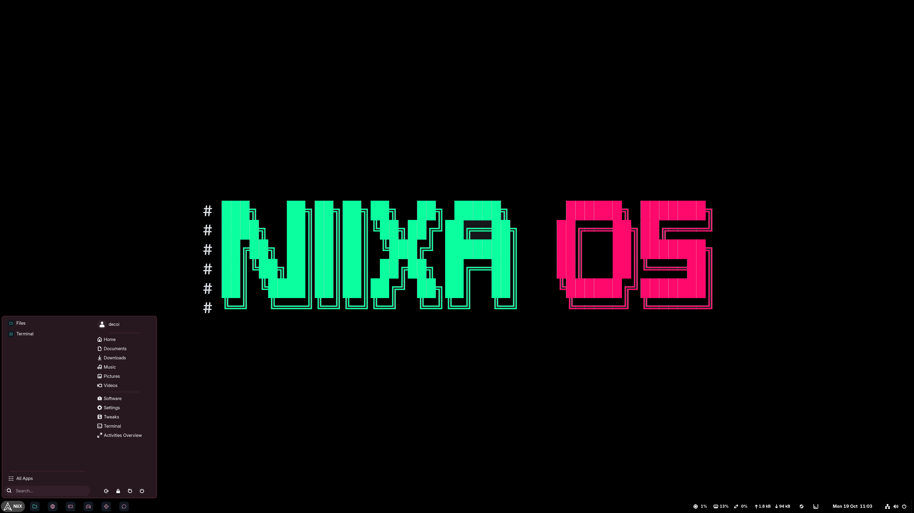
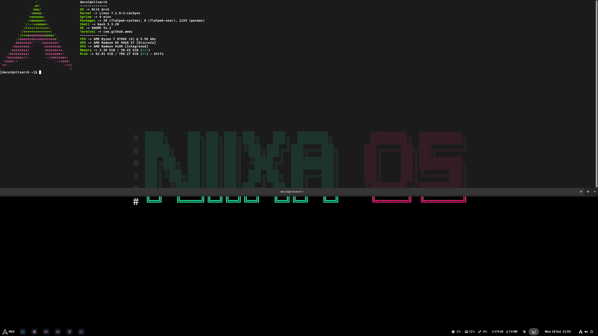
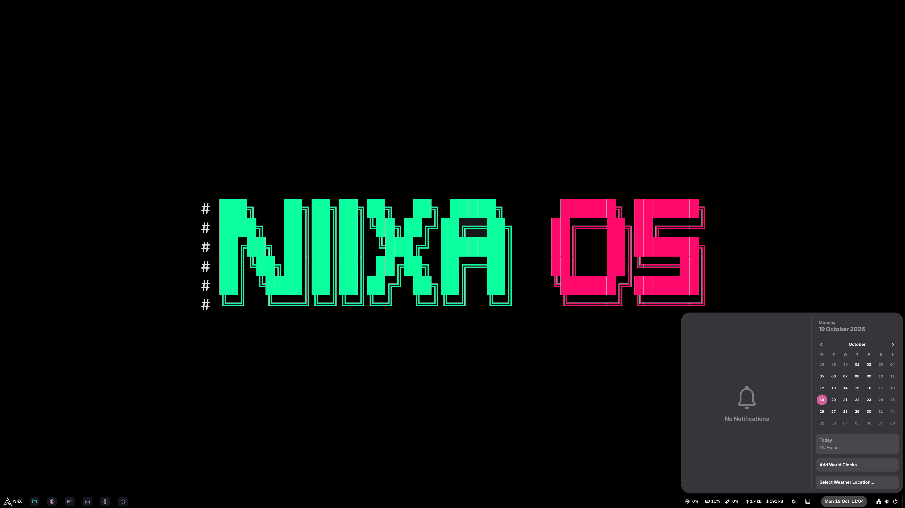

Arch Linux,
ready to play.
niixaOS is a fast, encrypted Arch desktop that sets itself up. Boot the USB, click install, and you get a clean GNOME desktop with your drivers and games ready to go.
▾
#What niixaOS does
Arch is powerful but slow to set up. niixaOS does the setup for you. It looks at your hardware, picks the right settings, and gives you a finished system in one go.
One click install
Next to Windows or on a whole drive. Pick your keyboard and timezone, and niixaOS does the rest.
CachyOS kernel
Optimised packages and kernel for modern CPUs, so everything feels snappier.
Ready to play
Steam, Lutris, Heroic and Proton come installed. Controllers work, even on the desktop.
Auto hardware setup
Finds your GPU and always uses the most powerful one. Handles laptops, handhelds and VMs too.
Encrypted by default
Your whole disk is protected with LUKS2. Btrfs snapshots let you roll back a bad update.
Clean GNOME
A taskbar and start menu that feel familiar, with no clutter on the desktop.
#Screenshots
A look at the desktop. Click a screenshot to see it full size.



#How to install
Three steps. Back up your files first, especially if you are installing next to Windows.
-
Write the USB stick
Download the ISO below and write it to a USB stick of 8 GB or more with balenaEtcher, Ventoy or
dd. -
Boot from it
Turn Secure Boot off in the BIOS. Restart, open the boot menu (usually F12, F11 or Esc) and pick the USB stick.
-
Click install
The live desktop opens. Try it out, then double-click Install niixaOS and answer a few questions. Nothing changes until you confirm.
After the restart, unlock the disk with your passphrase (you type it every time the PC starts). The first start downloads the newest updates and drivers, then you are ready to go.
#Download
Grab the live ISO, write it to a USB stick, and boot from it. You can try the desktop before you install.
niixaOS live ISO
sha256sum -c latest.sha256sudo dd if=niixaos.iso of=/dev/sdX bs=4M status=progress oflag=syncSystem check
- 64-bit PC with UEFI
- CPU with AVX2 (Intel 4th gen / AMD Ryzen or newer)
- Free space next to Windows, or a spare drive (64 GB+)
- USB stick of 8 GB or more
- Internet connection during install
- Secure Boot turned off
#FAQ
The questions people ask most.
Is it safe to install next to Windows?
Yes. niixaOS only uses free (unallocated) space or a partition you pick, and Windows stays in the boot menu. Shrink Windows first in Disk Management to make room.
Still, back up anything important before changing partitions. That goes for any operating system.
Does it work with NVIDIA?
Yes. NVIDIA, AMD and Intel graphics are detected automatically, including hybrid laptops. The NVIDIA driver is downloaded during the install, so make sure you are online.
Can I use it on a Steam Deck or another handheld?
Handheld PCs are detected and get their own settings. The CPU needs AVX2, which the Steam Deck and most recent handhelds have, and Secure Boot must be off.
Why does my CPU need AVX2?
niixaOS uses CachyOS packages built for newer CPUs (x86-64-v3), which is part of why it is fast. Almost every Intel CPU from 2013 on and every AMD Ryzen has AVX2.
Why does Secure Boot need to be off?
The Limine bootloader doesn't support Secure Boot. Your disk is still fully encrypted with LUKS2.
An update broke something. Can I undo it?
Yes. A Btrfs snapshot is taken before and after every update. Pick an older snapshot from the boot menu to go back to how things were.
How do I keep it up to date?
Run niix-update in a terminal. It updates the system, AUR and Flatpak apps and shows Arch news first. System updates also run on their own every 12 hours, never during a game.
Is it free and open source?
Yes. Everything is plain, readable code on GitHub.
Where do I report a bug?
Open an issue on GitHub or use the contact form below. Your CPU, GPU and whether it's a laptop or desktop helps a lot.
#Contact
Questions, bug reports or ideas? Send a message and we'll get back to you.
Bugs can also go straight to GitHub issues.